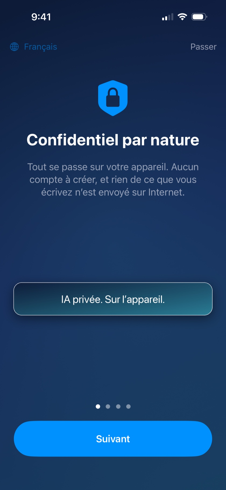

MonIA répond à vos questions directement sur votre iPhone — en avion, à l'étranger, en zone blanche. Vos conversations ne quittent jamais votre téléphone.
Télécharger sur l'App StoreAchat unique 4,99 € · Sans abonnement · Disponible très prochainement

L'intelligence artificielle est installée sur votre iPhone. Mode avion, montagne, plein océan : MonIA répond, sans réseau et sans frais d'itinérance.
Rien n'est envoyé sur internet, rien n'est stocké ailleurs que chez vous. Pas de compte à créer, pas de données collectées — ce n'est pas une promesse, c'est l'architecture même de l'app.
Vous payez une fois, l'app est à vous. Pas de mensualité, pas de crédits, pas de compte premium.
Astuce : un mode « Précision » optionnel télécharge un modèle plus puissant (~3 Go) pour les réponses qui demandent plus de finesse.
Oui. Après l'installation initiale, MonIA n'a plus besoin d'internet : le modèle d'intelligence artificielle tourne entièrement sur votre iPhone. Vous pouvez le vérifier en activant le mode avion.
Nulle part. Ils restent sur votre téléphone. MonIA n'a ni serveur de conversation, ni compte utilisateur, ni publicité. Voir notre politique de confidentialité.
ChatGPT vit sur des serveurs : il faut une connexion, et vos échanges y transitent. MonIA vit sur votre iPhone : moins encyclopédique qu'un géant du cloud, mais toujours disponible, totalement privé, et sans abonnement.
Parce que MonIA n'a pas de coûts de serveurs : l'IA tourne sur votre appareil. Vous payez l'application une fois, c'est tout.
Un iPhone sous iOS 26 ou plus récent, avec environ 4 Go d'espace libre pour l'assistant standard.
MonIA est traduit en 13 langues (français, anglais, allemand, espagnol, italien, néerlandais, polonais, portugais, japonais, coréen, chinois simplifié, russe…) et l'assistant comprend et répond dans encore davantage de langues.
Écrivez-nous : support@monia.info — nous répondons vite, et vos retours façonnent les prochaines versions.